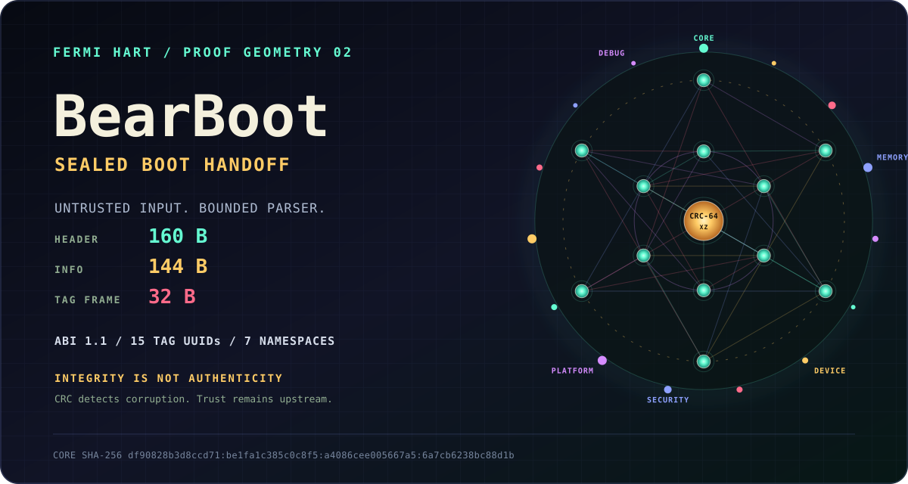

KERNEL PUBLISHES
bbp_header
160 BYTES
The kernel identity, requested tags, paging intent and stamped entry point.
BEAR_BOOTentryrequestsUUIDCRC
A complementary boot-handoff layer with UUID-versioned tags, CRC-64/XZ integrity, and a kernel parser built to distrust every byte it receives.

The producer may be buggy or hostile. BBP validates structure before use, bounds the walk, checks each seal, and treats a corrupt tag as absent.
Fixed-width, little-endian and packed. Every boundary structure is guarded by a compile-time size assertion; layout drift fails the build.
The kernel identity, requested tags, paging intent and stamped entry point.
The handoff root: producer identity, architecture, timestamps and first tag pointer.
A UUID, bounded size, version, next physical pointer and per-tag checksum.
A green word only appears where a command or checked-in execution record supports it. Structure-only work stays visibly structure-only.
make abi compiles 28 exact structure-size assertions. Reordering the wire contract fails before boot.
make test covers bad magic, forged lengths, cyclic chains, pointer wrap, CRC tamper and blob boundaries.
make fuzz runs a bounded libFuzzer/ASan smoke campaign or a deterministic fallback driver.
make qemu boots the real builder/parser proof under QEMU/TCG and requires serial PASS plus a distinct guest success status.
Four ports carry conformance reports and serial records. Current root CI does not reproduce every external OS boot.
make qemu-aarch64 and make qemu-riscv64 prove X0/A0 handoffs with CRC-verified QEMU Device Trees. LoongArch remains roadmap.
The OS-interface isolates allocation, logging, time and physical mapping. Each integration documents its own aliases, limits and evidence.
Native Linux tables become five CRC-sealed tags at late_initcall without replacing the existing boot path.
A higher-half Limine adapter keeps the kernel-image and HHDM aliases explicitly separate.
The 1991 fixed RAM model truthfully produces only memory map, HHDM and kernel address tags.
A bounded walk window surrounds PMM-backed tags; verified boot entropy seeds the kernel CSPRNG.
CRC-64/XZ detects accidental corruption and casual tampering. A producer controlling the bytes can recompute it. BBP never promotes a valid checksum into a trusted identity.